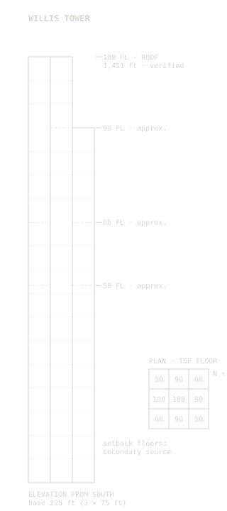

Introduction
Content pending — Identity: introduction (2–4 first-person sentences).
233_S_WACKER · A wireframe of the bundled-tube structure, drawn only from the figures in the table below. Each figure says whether it is verified, approximate, or interpretation.

| Fact | Value | Classification | Source |
|---|---|---|---|
| Address | 233 South Wacker Drive, Chicago 60606 | Verified | CTBUH, OSM |
| Location | 41.87874° N, 87.63596° W | Verified | Nominatim (OSM way 380868216) |
| Architectural height | 442.1 m / 1,451 ft | Verified | CTBUH (SOM: 1,450 ft) |
| Highest occupied floor | 412.7 m / 1,354 ft | Verified | CTBUH |
| Height to antenna tip | 527 m / 1,729 ft | Verified | CTBUH |
| Floors above ground | 108 (SOM, CAC, and city data cite 110) | Verified | CTBUH |
| Floors below ground | 3 | Verified | CTBUH |
| Completed | 1974 (SOM also cites 1973) | Verified | CTBUH, CAC |
| Architect / structural engineer | SOM: Bruce Graham, Fazlur Khan | Verified | CAC |
| Structural system | Bundled tube: 9 tubes in a 3×3 grid | Verified | SOM |
| Tube plan size | 75 × 75 ft (22.9 m) | Verified | SOM |
| Base plan size | 225 × 225 ft (68.6 m) | Approximate | Derived: 3 × 75 ft tube (SOM) |
| Site area | 3 acres | Verified | SOM |
| Orientation | Street grid, about 1° from true north | Approximate | Calculated from OSM polygon nodes |
| Floor 50: NW and SE tubes end | 7 tubes continue | Approximate | Secondary source (Wikipedia); SOM confirms all 9 tubes reach floor 50 |
| Floor 66: NE and SW tubes end | 5 tubes continue | Approximate | Secondary source (Wikipedia) |
| Floor 90: N, E, and S tubes end | 2 tubes continue (W and center) | Approximate | Secondary source (Wikipedia) |
| Perimeter column spacing | 15 ft (4.6 m) on center | Approximate | Secondary source (Wikipedia) |
| Typical floor-to-floor | about 12.5 ft | Approximate | Derived: 1,354 ft ÷ 108 floors (an average, not a stated figure) |
| Individual antenna heights | Pending verification | Not stated by any source checked |
| Fact | Value | Classification | Source |
|---|---|---|---|
| Block | Bounded by Wacker, Adams, Franklin, Jackson; Quincy St closed | Approximate | Secondary source (Wikipedia) |
| Lowest basement level | 43 ft below Franklin St (excavation 50 ft) | Approximate | Secondary source (Wikipedia) |
| Foundations | Reinforced concrete caissons to bedrock | Verified | SOM |
| Caissons reaching rock | 114 | Approximate | Secondary sources (PBS; Wikipedia: 201 total, 114 to rock) |
| Caisson diameter | up to 10 ft (3.0 m) | Approximate | Secondary source (Wikipedia) |
| Caisson depth | Pending verification | Not stated by any source checked | |
| Depth to limestone bedrock | up to about 100 ft (30 m), clay above | Approximate | Secondary source (Wikipedia) |
| Freight tunnel depth | 40 ft (12.2 m) below street | Approximate | Secondary sources (Wikipedia, WBEZ) |
| Freight tunnels | about 60 mi; built 1899 to about 1914; service 1906–1959; flooded 13 April 1992 | Approximate | Secondary sources (Wikipedia, WBEZ) |
| Tunnel cross-section | 7.5 ft high × 6 ft wide | Approximate | Secondary source (Wikipedia; WBEZ: 7 ft) |
| Freight tunnel under this block's streets | Pending verification | Not confirmed by any source checked | |
| Wacker Drive beside the tower | Two levels; South Wacker extension built 1948–1954 | Approximate | Secondary source (Wikipedia) |
| Pedway | Mostly a basement level; Willis Tower is not among the listed connections | Approximate | Secondary sources (Choose Chicago, Wikipedia) |
Content pending — Identity: introduction (2–4 first-person sentences).
Content pending — Identity: headshot with a text description.
Content pending — Identity: mission statement.
Assignment: at least 5 items.
Content pending — Leadership: Team Week reflection and team role.
Content pending — Leadership: Gifts Project deliverables or insights.
Content pending — Leadership: Community Role and leadership in service.
Content pending — Leadership: Giving & Receiving Feedback or Planetary Responsibility workshops.
Content pending — Leadership: Tea Host experience with Tea Guests.
Content pending — Leadership: key lessons from Tea Debriefs.
Content pending — Leadership: Dream Speech highlights and recognition.
Content pending — Leadership: CIVICs Project lessons and post-internship use.
Assignment: at least 4 items.
Content pending — Business: Client Project problem, team approach, and my role.
Content pending — Business: forming and working in my Consulting Company.
Content pending — Business: RFP proposal artifacts and takeaways.
Content pending — Business: insights from Company Engagement Days.
Content pending — Business: receiving feedback, adapting, and professionalism.
Content pending — Business: highlights from Allskates, Tea Guests, or external guests.
Assignment: at least 5 items.
Content pending — Technology: walkthrough of the problem solved and the part I built.
Content pending — Technology: SQL, Excel, hot keys, timed testing, and coaching insights.
Content pending — Technology: a moment coding clicked, or a struggle I overcame.
Content pending — Technology: growth in debugging, testing, and asking technical questions.
Content pending — Technology: collaboration through GitHub, branching, and version control.
Content pending — Technology: Office 365, Google Drive, and versioned workflows.
Content pending — Technology: Trello, Teams, Zoom, Outlook, and Windows Explorer.
Content pending — Technology: typing speed growth toward 40+ WPM.
Content pending — Technology: 5 Hour Minimums.
Assignment: at least 4 items.
Content pending — Career Planning: short- and long-term career plans.
Content pending — Career Planning: work with the Career Development Director and Program Manager.
Content pending — Career Planning: insights from Accenture, Capital One, Salesforce, and other partners.
Content pending — Career Planning: resume feedback or job-search preparation.
Content pending — Career Planning: my professional brand and values.
Content pending — Career Planning: roles I am pursuing and why.
Assignment: at least 1 item in each of the four areas.
Content pending — Financial Wellness: reflection on spending patterns.
Content pending — Financial Wellness: short- and long-term financial goals.
Content pending — Financial Wellness: notes from financial workshops.
Content pending — Financial Wellness: techniques to increase my credit score.
Content pending — Emotional Wellness: journal entry about a challenging moment.
Content pending — Emotional Wellness: challenging negative self-talk or imposter syndrome.
Content pending — Emotional Wellness: daily or weekly mood tracker.
Content pending — Emotional Wellness: affirmations or self-talk upgrades.
Content pending — Mental Wellness: coping strategies that work for me.
Content pending — Mental Wellness: how I have handled stress or burnout.
Content pending — Mental Wellness: weekly focus journal or self-check.
Content pending — Mental Wellness: personal mental wellness toolbox.
Content pending — Physical Wellness: habit tracker (hydration, sleep, steps).
Content pending — Physical Wellness: notes from wellness or medical appointments.
Content pending — Physical Wellness: a physical routine I improved or started.
Content pending — Physical Wellness: local resources I use or plan to use.